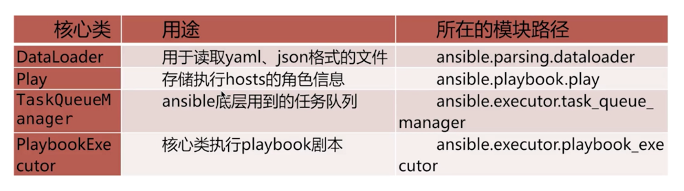
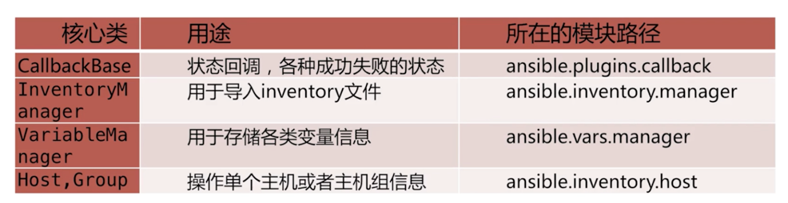
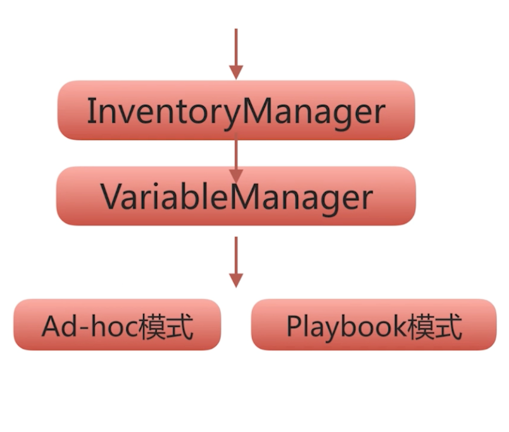
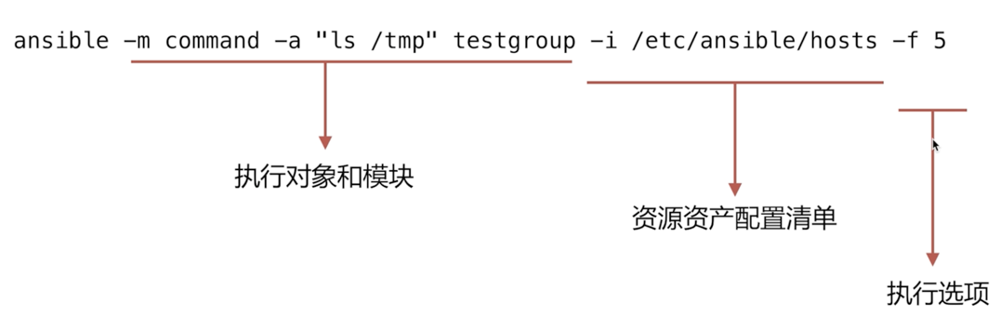
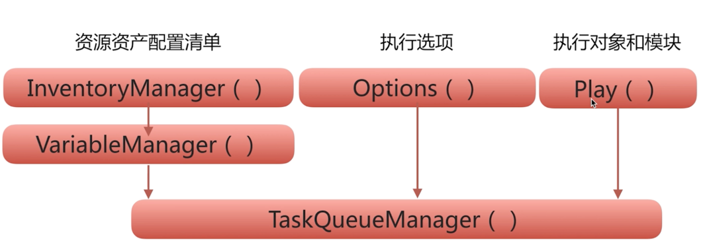
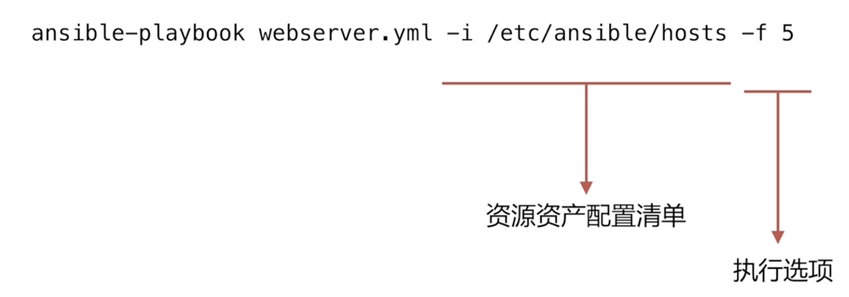
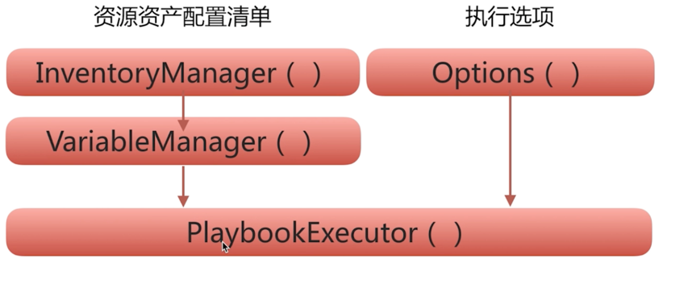
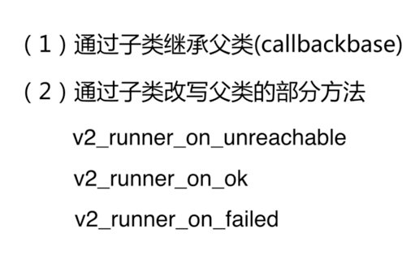

python中使用ansible模块
ansible 核心类介绍#
from ansible.parsing.dataloader import DataLoader from ansible.vars.manager import VariableManager from ansible.inventory.manager import InventoryManager from ansible.playbook.play import Play from ansible.executor.task_queue_manager import TaskQueueManager from ansible.plugins.callback import CallbackBase


ansible 实现自动化过程#

InventoryManager类#
InventoryManager: 用于管理主机和主机组资源设备细信息的
InventoryManager调用过程#
# 加载hosts配置文件的，加载器 loader = DataLoader() # 读取hosts中的主机成员 # loader: 实例对象 # sources:传入资产配置文件路径 inventory = InventoryManager(loader = loader, sources= ['hosts',]) # 获取hosts中的主机成员 groups = inventory.get_groups_dict() print(groups)
InventoryManager相关方法#
add_host(): 添加主机到指定主机组
loader = DataLoader() inventory = InventoryManager(loader = loader, sources= ['hosts',]) inventory.add_host(host='192.168.199.214', group='group2', port=22)
get_groups_dict(): 查看主机组资源
loader = DataLoader() inventory = InventoryManager(loader = loader, sources= ['hosts',]) inventory.get_groups_dict()
get_hosts(): 获取指定的主机对象
loader = DataLoader() inventory = InventoryManager(loader = loader, sources= ['hosts',]) inventory.get_hosts()
InventoryManager类#
loader = DataLoader()
inventory = InventoryManager(loader = loader, sources= ['hosts',])
variable = VariableManager(loader = loader, inventory=inventory)
# 查看变量方法
variable.get_vars(host='192.168.199.214')
# 设置主机变量方法
variable.set_host_variable(host='192.168.199.214', varname='ansible_ssh_pass', value='12345')
# 添加扩展变量
variable.extra_vars = {'var': 'value', 'var1':'value'}
ad-hoc模式调用#
ad-hoc通过命令的调用回顾#

ad-hoc模式通过类的调用流程#

实例演示#
Options = namedtuple('Options', ['connection', 'module_path',
'forks', 'timeout', 'remote_user',
'ask_pass', 'private_key_file',
'ssh_common_args', 'ssh_extra_args',
'sftp_extra_args',
'scp_extra_args', 'become',
'become_method', 'become_user',
'ask_value_pass',
'verbosity',
'check', 'listhosts',
'listtasks', 'listtags',
'syntax', 'diff'])
options = Options(
connection='smart',
module_path=None,
timeout=10,
remote_user=None,
ask_pass=None,
private_key_file=None,
ssh_common_args=None,
ssh_extra_args=None, sftp_extra_args=None,
scp_extra_args=None, become=None, become_method=None,
become_user=None, ask_value_pass=None, verbosity=None, check=None,
listhosts=None, listtasks=None, listtags=None, syntax=None, diff=None
)
ad_hoc_source = dict(
name="Ansible ad-hoc",
hosts=['192.168.199.214'], # 目标主机的host
gather_facts='no', # 关闭在执行命令前，获取系统的环境信息
tasks=[dict(action=dict(module='shell', args='touch /tmp/ad_hoc_test1'))]
)
loader = DataLoader()
inventory = InventoryManager(loader=loader, sources=['hosts', ])
variable = VariableManager(loader=loader, inventory=inventory)
taskQueueManager = TaskQueueManager(inventory=inventory,
variable_manager=variable,
loader=loader,
options=options,
stdout_callback=None
)
play = Play().load(data=ad_hoc_source, variable_manager=variable, loader=loader)
taskQueueManager.run(play=play)
playbook模式调用#
playbook 通过命令调用过程#

playbook模式通过类的#

实例演练#
Options = namedtuple('Options', ['connection', 'module_path',
'forks', 'timeout', 'remote_user',
'ask_pass', 'private_key_file',
'ssh_common_args', 'ssh_extra_args',
'sftp_extra_args',
'scp_extra_args', 'become',
'become_method', 'become_user',
'ask_value_pass',
'verbosity',
'check', 'listhosts',
'listtasks', 'listtags',
'syntax', 'diff'])
options = Options(
connection='smart',
module_path=None,
timeout=10,
remote_user=None,
ask_pass=None,
private_key_file=None,
ssh_common_args=None,
ssh_extra_args=None, sftp_extra_args=None,
scp_extra_args=None, become=None, become_method=None,
become_user=None, ask_value_pass=None, verbosity=None, check=None,
listhosts=None, listtasks=None, listtags=None, syntax=None, diff=None
)
ad_hoc_source = dict(
name="Ansible ad-hoc",
hosts=['192.168.199.214'], # 目标主机的host
gather_facts='no', # 关闭在执行命令前，获取系统的环境信息
tasks=[dict(action=dict(module='shell', args='touch /tmp/ad_hoc_test1'))]
)
loader = DataLoader()
inventory = InventoryManager(loader=loader, sources=['hosts', ])
variable = VariableManager(loader=loader, inventory=inventory)
playbookExecutor = PlaybookExecutor(playbooks=['f1.yml'],
inventory=inventory,
variable_manager=variable,
loader=loader,
options=options,
stdout_callback=None,
passwords={}
)
play = Play().load(data=ad_hoc_source, variable_manager=variable, loader=loader)
playbookExecutor.run(play=play)
CallbackBase 类方法改写#
CallbackBase类的作用就是任务执行完成以后，通过CallbackBase类获取执行结果内容
CallbackBase类改写的过程#

实例演练#
class ModelResultsCollector(CallbackBase): def __init__(self, *args, **kwargs): super(ModelResultsCollector, self).__init__(*args, **kwargs) self.host_ok = {} self.host_unreachable = {} self.host_failed = {} def v2_runner_on_unreachable(self, result): self.host_unreachable[result._host.get_name()] = result def v2_runner_on_ok(self, result, *args, **kwargs): self.host_ok[result._host.get_name()] = result def v2_runner_on_failed(self, result, *args, **kwargs): self.host_failed[result._host.get_name()] = result
ad-hoc的CallbackBase#
CallbackBase 类的改写#
class ModelResultsCollector(CallbackBase): def __init__(self, *args, **kwargs): super(ModelResultsCollector, self).__init__(*args, **kwargs) self.host_ok = {} self.host_unreachable = {} self.host_failed = {} def v2_runner_on_unreachable(self, result): self.host_unreachable[result._host.get_name()] = result def v2_runner_on_ok(self, result, *args, **kwargs): self.host_ok[result._host.get_name()] = result def v2_runner_on_failed(self, result, *args, **kwargs): self.host_failed[result._host.get_name()] = result
CallbackBase应用#
self.callback = ModelResultsCollector() import traceback try: tqm = TaskQueueManager( inventory=self.inventory, variable_manager=self.variable_manager, loader=self.loader, options=self.options, passwords=self.passwords, stdout_callback = "minimal", ) tqm._stdout_callback = self.callback
playbook的CallbackBase#
CallbackBase 类的改写#
class PlayBookResultsCollector(CallbackBase): CALLBACK_VERSION = 2.0 def __init__(self, *args, **kwargs): super(PlayBookResultsCollector, self).__init__(*args, **kwargs) self.task_ok = {} self.task_skipped = {} self.task_failed = {} self.task_status = {} self.task_unreachable = {} def v2_runner_on_ok(self, result, *args, **kwargs): self.task_ok[result._host.get_name()] = result def v2_runner_on_failed(self, result, *args, **kwargs): self.task_failed[result._host.get_name()] = result def v2_runner_on_unreachable(self, result): self.task_unreachable[result._host.get_name()] = result def v2_runner_on_skipped(self, result): self.task_ok[result._host.get_name()] = result def v2_playbook_on_stats(self, stats): hosts = sorted(stats.processed.keys()) for h in hosts: t = stats.summarize(h) self.task_status[h] = { "ok":t['ok'], "changed" : t['changed'], "unreachable":t['unreachable'], "skipped":t['skipped'], "failed":t['failures'] }
CallbackBase应用#
self.callback = PlayBookResultsCollector()
executor = PlaybookExecutor(
playbooks=[playbook_path],
inventory=self.inventory, variable_manager=self.variable_manager,
loader=self.loader,
options=self.options,
passwords=self.passwords,
)
executor._tqm._stdout_callback = self.callback